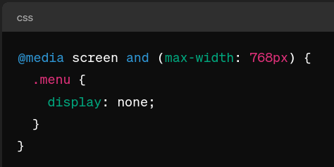
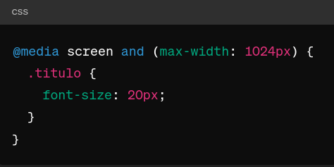

Exemplo 1: Layout de Colunas Flexíveis
Este exemplo demonstra como o layout de colunas pode se ajustar em dispositivos com tela pequena:

Exemplo 2: Ocultando Elementos
Aqui mostramos como ocultar elementos em dispositivos com tela pequena:
Exemplo 3: Tamanhos de Fonte Adaptáveis
Este exemplo ajusta o tamanho da fonte em dispositivos menores para melhor legibilidade:
Exemplo 4: Grid Responsivo
Um exemplo de layout utilizando grid responsivo para se ajustar a diferentes tamanhos de tela.

Exemplo 5: Menu Hamburguer
Implementação de um menu hamburguer para dispositivos móveis.

Exemplo 6: Tipografia Adaptável
Utilização de tipografia adaptável para proporcionar uma melhor experiência de leitura em dispositivos variados.